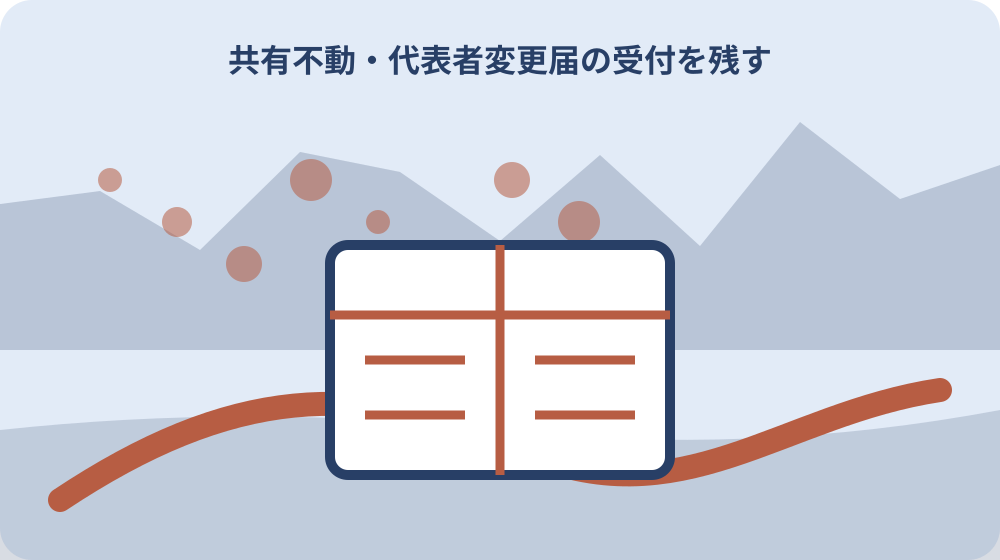

先に結論を確認する
この記事の答え：届きません。共有者全員が連帯納税義務を負い、代表者一人へ通知書が送られます。
森町で最初に照合する条件：共有代表者、実際の負担者、口座名義人を別欄にして家族間の精算と町への納税を分ける。
一月一日の共有者一覧を固定する
固定資産税は毎年一月一日現在の所有者へ課されます。家族台帳の最初には、現在の家族関係ではなく、その年の一月一日時点で登記や課税資料に表れている共有者を一人ずつ記します。
共有者の氏名、持分、住所は同じ資料から転記し、資料名と確認日を付けます。前年の通知書をそのまま使わず、売買、相続、住所変更が年の途中にあったかを別欄で確認します。
一月一日後に持分を譲渡しても、その年度の納税通知が直ちに新名義へ変わるとは限りません。登記日と賦課期日を並べ、当年度と翌年度の扱いを税務課へ尋ねます。
家族が把握していない共有者が資料に載っていた場合は、誤記と決めつけません。どの土地・家屋のどの持分かを確かめ、必要なら登記事項や戸籍関係資料へ戻ります。
一覧を固定する目的は所有関係を家族だけで確定することではありません。町へ質問する対象年度と物件をそろえ、通知先や納付状況を取り違えないための基準日にします。
森町の固定資産税は毎年一月一日現在の土地・家屋・償却資産の所有者が納税義務者となる。この基準日は通知が届く五月時点とは異なります。資料へ日付を付け、年度途中の変更と混ぜずに税務課へ質問します。
共有代表者、実際の負担者、口座名義人を別欄にして家族間の精算と町への納税を分ける。不明な共有者を一覧から消さず、根拠資料と照会先を書きます。確認が終わるまでは持分合計を確定値として扱いません。
一覧を作った人とは別の家族が原資料と照合します。氏名の旧字体、持分の分数、物件所在地を読み上げ、転記時の見落としを減らします。
連帯納税義務と家族負担を分ける
共有名義の固定資産には共有者全員が連帯して納付する義務を負います。町から通知を受け取る代表者だけが税を負うという意味ではないため、通知先と納税義務者一覧を分けます。
一方、家族内で誰がいくら負担するかは、町が持分ごとに課税を分割する仕組みとは別の話です。立替者、精算相手、精算予定日を家族用の表に置き、町への納期限より前に調整します。
代表者が全額を納めた場合も、家族間の精算が済んだことにはなりません。町への納付控えと、共有者間の送金記録を別々に保管し、二つの完了日を残します。
負担割合に争いがあるときは、町の納期限を止められると自己判断しません。固定資産税の納付相談と、共有者間の法律上の問題を分け、それぞれ適切な窓口や専門家へ相談します。
家族台帳には「町への義務」と「家族の合意」の見出しを設けます。同じ金額を二度記録することになっても、誰に対する支払いかを明示すれば混同を防げます。
共有名義の土地や家屋には共有者全員が固定資産税の連帯納税義務を負う。町への納付責任を確認したうえで、家族の分担は別の合意として記録します。片方の完了をもう片方の確認済みの記録にしません。
一月一日の登記・課税台帳上の状態と通知が届いた五月時点の住所を両方残す。負担割合の合意が変わったら変更日を残します。町の納税義務に関する説明まで書き換えないよう欄を分離します。
家族間精算が長引く場合も、町への納付状況は全員へ共有します。未納と精算未了を別の記号で示し、催告を受けてから事情を知る事態を防ぎます。
共有代表者の五順位を照合する
森町は共有代表者を決める順位として、持分が多い人、町内在住者、世帯主、物件所在地にいる人、登記順位が一番の人を案内しています。途中の条件を飛ばさず順番に確認します。
持分が同じ共有者がいるなど、資料だけで順位を決めにくい場合は家族が推測せず、対象物件と共有者一覧を示して税務課へ確認します。確認した日と回答の対象年度を残します。
「物件所在地にいる人」という表現の具体的な適用も、個別事情で迷う場合があります。住民票、実際の居住、郵便送付先を同じ意味として扱わず、町が必要とする情報を尋ねます。
順位表は代表者が物件を単独で所有する証拠ではありません。家族へ共有するときは、代表者を通知の受取窓口として記し、共有者全員の欄を消さないようにします。
現在の代表者と順位上の候補が異なるときは、変更届が必要かを確認します。家族会議で候補を決めただけで、町の送付先が自動的に変わるとは考えません。
共有固定資産の税額を共有者ごとに持分割合で分けて課税することはできない。順位の適用が迷う場合は共有者一覧を示します。家族の呼び方でなく町が確認できる氏名、住所、持分を用います。
代表者変更は家族内メモだけで終えず共有代表者変更届の受付を確認する。候補者本人へ通知の受取意思と住所を確認します。本人同意の記録と町への届出は別に保管します。
順位だけを家族へ知らせるのではなく、代表者の役割も説明します。通知を受けたら何日以内に誰へ写しを渡すかを決め、情報が一人で止まらないようにします。
納税通知書の外何名表示を読む
共有名義の通知書では、代表者氏名の下に「外何名様分」と表示されます。この人数表示は共有者がほかにもいることを示す手掛かりとして読み、氏名一覧は別資料で確認します。
「外何名」を現在の家族人数や相続人の人数と置き換えません。どの土地・家屋の共有者を指すのか、課税明細や登記事項と対応させます。
通知書が複数届いた場合は、宛名だけで重複と判断せず、年度、通知番号、物件明細を比較します。単有物件と共有物件が同じ人へ届くこともあるため、封筒単位ではなく明細単位で整理します。
人数に心当たりがないときは、通知書の写しを無関係な親族へ広く送らず、税務課へ照会する項目を絞ります。個人情報を含む原本の保管者も決めます。
家族台帳には表示を原文どおり転記し、その下に確認済み共有者を列挙します。人数が一致しない場合は未確認のまま残し、確認先と期限を書きます。
森町は共有者の中から代表者一人を決定し納税通知書をその代表者へ送付する。人数表示は一覧の代わりではありません。課税明細と登記事項へ戻れるよう、通知書の年度と保管場所を付けます。
共有代表者、実際の負担者、口座名義人を別欄にして家族間の精算と町への納税を分ける。通知書を撮影して共有するときは物件以外の個人情報を必要以上に広めません。原本の保管者を決めます。
共有者数が変わったように見える通知は前年分と並べます。相続や持分移転の資料を確認し、表示差の理由を税務課へ質問できる形にします。
送付先住所と実住所を確認する
納税通知書が届く住所と代表者が現在暮らす住所は一致しない場合があります。通知書の宛先、住民票上の住所、実際の連絡先を三つの欄に分けます。
転居後も旧住所へ届いている場合は、郵便転送だけで解決したと考えません。森町で必要な送付先変更や代表者変更の手続を税務課へ確認します。
共有者の一人が代表者宅から通知書を受け取る運用なら、到着日と共有日を残します。家族内で回覧が止まっても法定納期限は変わらないため、第二連絡者も決めておきます。
空き家や物件所在地を送付先としている場合は、郵便受けを誰が確認するかを明確にします。現地管理の記録と納税通知の管理を分け、長期間放置しません。
住所情報を更新するときは、口座振替や他の税目も自動的に変わると決めつけません。変更が及ぶ範囲を手続ごとに確認し、受付日を台帳へ戻します。
共有代表者の第一順位は持分が多い者、第二順位は森町内に在住する者である。郵便転送の期限だけに頼らず町の登録を確認します。連絡が届く住所と登記上の住所を同じ欄にしません。
一月一日の登記・課税台帳上の状態と通知が届いた五月時点の住所を両方残す。住所変更が他制度へ及ぶと推測せず、固定資産税の送付先として確認します。受付部署と日付を記録します。
遠方の代表者には電子的な連絡先も確認します。ただし町からの通知方法を勝手に変更せず、家族内で到着を知らせる補助手段として使います。
代表者変更届の受付を残す
共有代表者を変えたい場合は、森町へ共有代表者変更届を提出します。家族の合意日、届出作成日、町への提出日、受付を確認した日を別々に記録します。
新代表者の氏名や住所だけでなく、対象となる共有物件と共有者の同意状況を整理します。必要な記載や添付物は提出前に税務課へ確認します。
届出を郵送する場合は到着見込みと不備時の連絡先を決めます。投函日だけで変更完了とせず、いつの通知から新代表者へ届くかを確認します。
代表者変更後も、共有者全員の連帯納税義務は残ります。新代表者だけの台帳へ作り替えず、旧代表者から引き継いだ通知と納付履歴を保管します。
受付後に新しい通知が届いたら、宛名、住所、対象年度を確認します。反映されていない場合は、提出控えを手元に置いて税務課へ照会します。
共有代表者の第三順位は世帯主、第四順位は物件所在地にいる者である。提出した事実と反映結果を分けます。次の通知が届くまで時間がある場合は、受付を確認した方法を控えます。
代表者変更は家族内メモだけで終えず共有代表者変更届の受付を確認する。不備の連絡を受ける人を決めます。提出者と新代表者が異なる場合も、回答が止まらない連絡経路を作ります。
変更届の控えには対象年度と物件を記します。複数の共有物件があるときは、一件の届出でどこまで変更されるかを受付時に確認します。
五月発送と四期納付を予定表へ置く
森町は固定資産税の納税通知書を五月中旬に発送し、年四回の納期を設けています。通知到着を待つ期間と、各期の納期限を家族の予定表へ置きます。
四期分を期別で納めるか一括で納めるかを決める前に、納付書と口座振替の登録状態を確認します。前年と同じ方法が自動的に続くと考えず、通知書の案内を読みます。
家族間で負担を集める場合は、町の納期限より前に送金期限を設定します。立替者が不足分を抱えたまま納期を迎えないよう、未入金を確認する日も決めます。
通知書が五月下旬になっても見当たらない場合は、発送の有無と送付先を税務課へ確認します。共有代表者以外の家族が届かないと判断する前に、現在の代表者へ連絡します。
納付後は領収控えや口座記録を期ごとに台帳へ付けます。四期すべてが終わるまで年度の行を閉じず、未納期が一目で分かるようにします。
共有代表者順位の第五順位は登記順位が一番の者と森町が案内している。予定表には町の納期限と家族の送金期限を二段で置きます。休日を挟む振込日も考慮して余裕を持たせます。
共有代表者、実際の負担者、口座名義人を別欄にして家族間の精算と町への納税を分ける。納付が遅れそうなら期限前に相談します。家族間の送金待ちを理由に無連絡で納期限を越えません。
一括納付を選んだ場合も四期の欄を消しません。本来の納期を残しておくと、翌年度に期別納付へ戻したときも家族が予定を立て直せます。
口座名義と代表者名を照合する
納税通知の代表者と、口座振替に使う口座の名義人は同じとは限りません。現在登録されている口座と管理者を確認し、代表者変更によって口座も自動変更すると考えないようにします。
代表者が亡くなった、口座を解約した、金融機関を変えたい場合は、口座振替の変更期限と必要書類を個別に確認します。納期限直前の変更は間に合うかを税務課へ尋ねます。
家族が代表者口座へ負担分を送る場合は、固定資産税用の送金だと分かる記録を残します。生活費など別の送金と混ぜず、対象年度と物件を摘要へ付けます。
残高不足が分かったときは、再振替されると推測しません。町からの案内を確認し、納付書での支払いなど必要な対応と期限を記録します。
口座情報は共有台帳へ詳細を書き過ぎず、金融機関名と管理者、確認日だけを索引にします。口座番号等を共有する範囲は家族内でも限定します。
共有代表者を変更したい場合は森町へ共有代表者変更届を提出する必要がある。代表者変更と口座変更は別工程として扱います。どちらを誰がいつ手続したか、証拠資料を対応させます。
一月一日の登記・課税台帳上の状態と通知が届いた五月時点の住所を両方残す。口座情報の変更中は今回分の納付方法を確認します。新旧どちらから引かれるかを家族の推測で決めません。
引落結果は通帳の記号だけで判断せず、金額と対象期を通知書へ照合します。複数物件分が合算される場合は明細の見方を税務課へ確認します。
単有・共有の証明手数料を分ける
固定資産関係の証明や課税台帳閲覧を頼むときは、単独所有分と共有名義分を別の対象として数える必要があります。欲しい証明の種類と物件名義を先に整理します。
同じ所在地でも土地と家屋、単有と共有が混在する場合があります。一件で足りると決めず、必要通数と手数料を税務課へ確認します。
相続や売買のために証明を取るなら、提出先が求める年度と証明名を確認します。用途を伝えず前年と同じ書類を請求すると、取り直しになる可能性があります。
代理人が請求する場合の本人確認や委任状も確認します。家族だから不要と推測せず、窓口へ行く人と名義人の関係を正確に伝えます。
台帳には取得日、証明名、年度、単有・共有の区分、通数、手数料を残します。原本を提出した場合は写しの保管可否も確認します。
納税通知書は五月中旬に発送され固定資産税は年四回の納期が設定されている。証明を取る目的を提出先へ確認します。年度や名義区分が違えば、同じ物件でも必要な書類が変わり得ます。
代表者変更は家族内メモだけで終えず共有代表者変更届の受付を確認する。手数料は最新額を窓口で確認します。以前取得したときの金額を現在も同じものとして台帳へ写しません。
証明書を受け取ったら氏名、年度、物件の範囲を窓口で確認します。帰宅後に不足へ気づかないよう、請求目的を書いたメモと照らします。

売買・相続後も年度を分ける
年の途中で売買や相続があっても、固定資産税は一月一日の所有状態を基準にします。登記が変わった日と、納税通知の対象年度を一つの行へ混ぜません。
売買契約で税額を日割り精算することがありますが、それは当事者間の取り決めです。森町へ納める義務や通知先と区別し、契約書上の精算表を別に保管します。
相続後に相続人代表者を定める手続と、共有代表者の扱いが同じかは個別に確認します。似た名称だけで同じ届出を使わないよう、対象物件と発生事情を伝えます。
翌年度の通知が届いたら、新しい名義や代表者が反映されているかを確認します。前年の台帳を複製するだけでなく、一月一日時点の資料から作り直します。
年度をまたぐ未納や還付がある場合は、どの年度のどの期かを明示します。家族内精算も年度別に分け、現在の税額と古い残額を混ぜません。
固定資産税は納付書または登録済み口座からの口座振替で期別か一括納付ができる。賦課期日後の契約や登記は次年度との関係を確認します。当事者間の精算と町の課税を一文で説明しません。
共有代表者、実際の負担者、口座名義人を別欄にして家族間の精算と町への納税を分ける。複数年度の通知を並べ、物件と代表者の変化を確認します。古い通知を現在の所有証明として使いません。
売買の精算表を次の所有者へ渡す際は、町の納税通知そのものと区別します。契約上の精算が町による課税変更を意味しないことを双方で確認します。
大石の視点：代表者を所有者と呼ばない
ここまでの賦課期日、連帯納税義務、代表者順位、変更届、通知時期は森町資料と地方税法で確認できる事実です。以下は私、大石博之の実務上の考えです。
私は共有代表者を単に「所有者」と呼ばないようにしています。通知の受取役と共有持分を持つ人々を言葉で分けるだけで、売却相談や相続相談の初期誤解を減らせるからです。
代表者が納付を担っていても、他の共有者の権利が消えるわけではありません。査定や管理の相談では、通知書だけでなく登記事項と共有者の連絡状況を確認します。
家族内の負担が偏っているときは、税の通知先変更だけで問題が解決するとは限りません。管理費、修繕、利用状況も別表にし、必要なら専門家へ相談します。
この見方は森町の公式判断ではありません。代表者の決定、届出、納税状況は対象年度と物件を示して税務課へ確認してください。
納税通知書では共有名義の場合に代表者氏名の下へ外何名様分と記載される。言葉を分けるだけで確認順が明確になります。通知代表者、共有者、実際の管理者を三列にして話を始めます。
一月一日の登記・課税台帳上の状態と通知が届いた五月時点の住所を両方残す。私見と制度事実を明確に分けます。個別の所有権や負担争いは税務課だけで結論が出ると考えません。
代表者という言葉が登場した資料には、何の代表者かを括弧で補います。納税通知、相続、管理の代表を同じ人物と決めつけないためです。
家族台帳の年次更新を決める
家族台帳は毎年、納税通知書が届いた時点で更新します。一月一日の共有者、通知代表者、送付先、口座、四期の納期限を前年から写さず確認します。
変更がなかった項目にも確認日を入れます。空欄と確認済みを区別し、登記や住所の変更が予定されている場合は次回確認日を置きます。
年度中は納付、家族間精算、代表者変更、証明取得を時系列で追記します。古い行を削除せず、訂正した人と理由を残します。
共有者へ渡す版には必要最小限の情報だけを載せます。口座番号や本人確認資料の写しは別管理とし、共有方法と保管期限を決めます。
年度末には四期の納付と家族間精算の双方を確認します。未解決事項があれば、金額、相手、確認先、期限を翌年度へ明示的に引き継ぎます。
単有名義と共有名義の課税台帳閲覧や証明書交付はそれぞれ手数料が必要となる。年次更新は通知の誤り探しだけが目的ではありません。家族が納期限と連絡担当を共有する機会として使います。
代表者変更は家族内メモだけで終えず共有代表者変更届の受付を確認する。台帳を読む家族が変わっても分かるよう、略称を避けます。確認先の正式名称と電話した日を添えます。
更新後の台帳には次回確認月を入れます。代表者の転居や共有者の死亡を知った場合は年一回を待たず、必要な手続を税務課へ相談します。